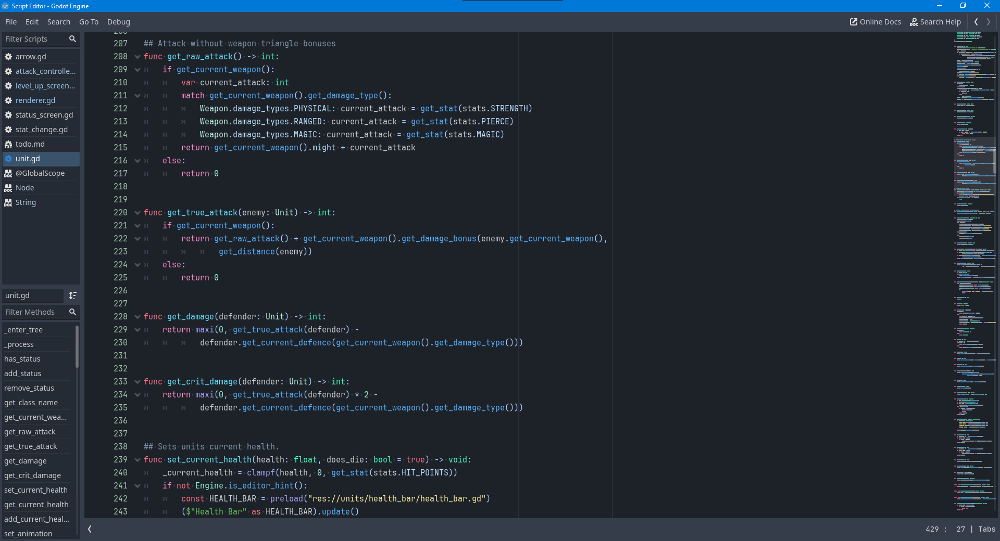
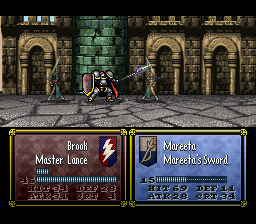
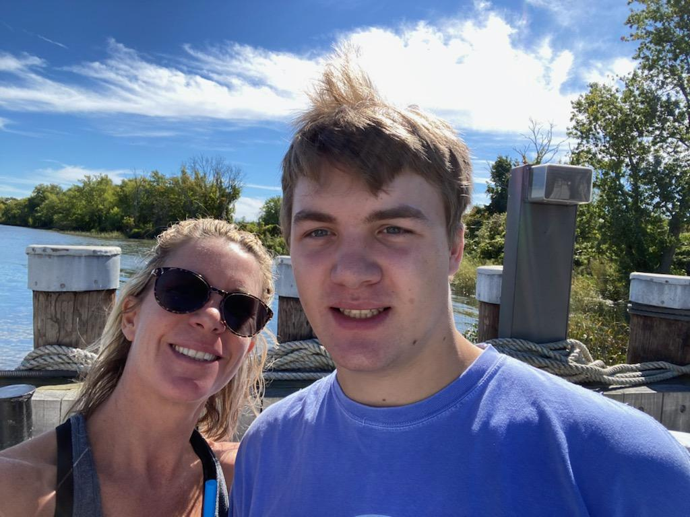

My schooling has been standard, with my elementary, middle, and high school all being part of Hebron CT's public schools. My college of choice was Quinnipiac University.
My experience with computer science is that I have taken many courses in computer science related fields. I have also learned different coding languages on my own time, and have also worked on a project on the Godot engine on my own time as well.
Besides working on my engine, I like to play video games in my spare time
  